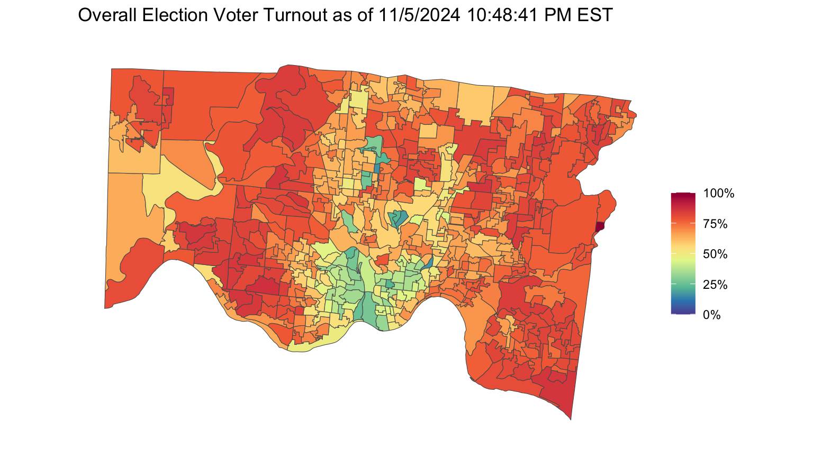
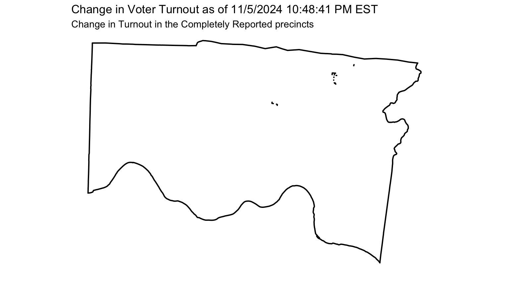
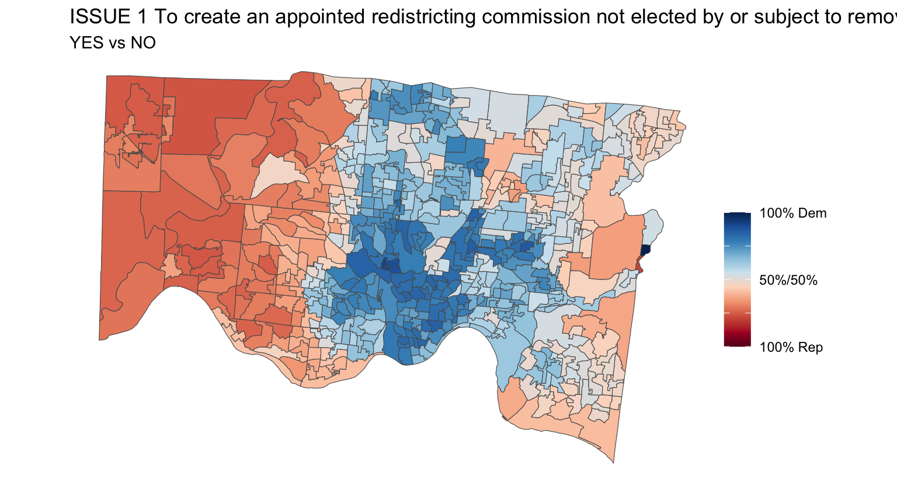
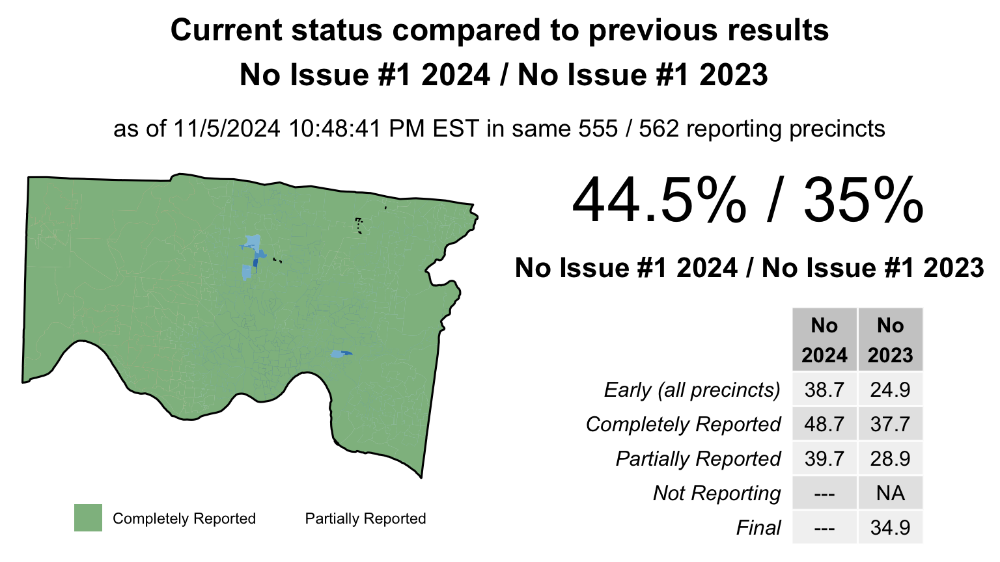
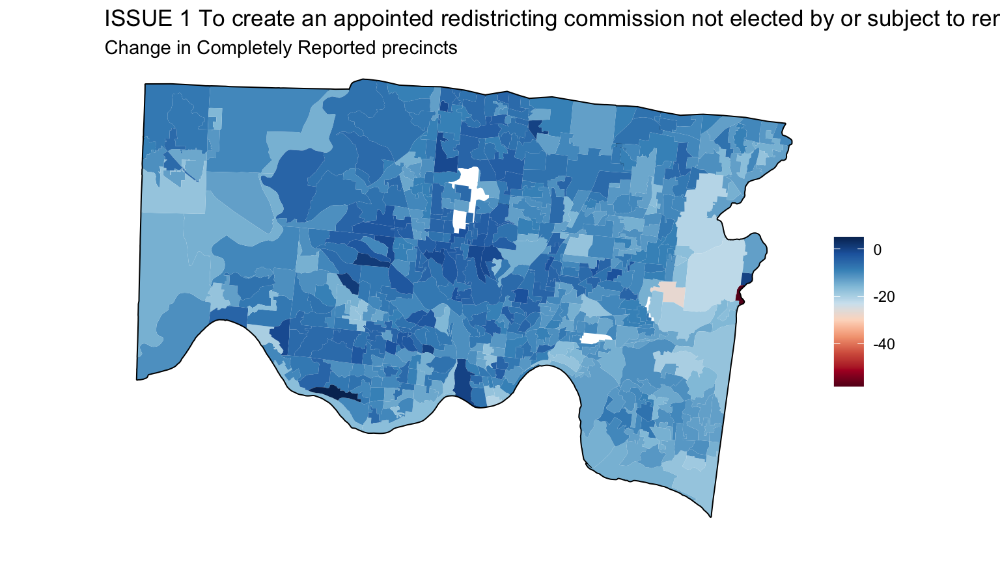

parse_contest_results <-function(xml_file){## Get all Contest nodes contests <- xml_file %>%xml_find_all(".//Contest")# Function to extract vote data for each contest and candidate parse_contest_votes <-function(contest_node) { contest_name <-xml_attr(contest_node, "text")# Get all candidate (Choice) nodes choices <- contest_node %>%xml_find_all(".//Choice")# Iterate through each candidatemap_df(choices, function(choice) { candidate_name <-xml_attr(choice, "text")# Get all VoteType nodes (Early, Election) vote_types <- choice %>%xml_find_all(".//VoteType")# Iterate through each VoteType and precinct datamap_df(vote_types, function(vote_type) { vote_type_name <-xml_attr(vote_type, "name")# Extract precincts precincts <- vote_type %>%xml_find_all(".//Precinct")# For each precinct, extract the votes and precinct namemap_df(precincts, function(precinct) { precinct_name <-xml_attr(precinct, "name") votes <-xml_attr(precinct, "votes") %>%as.numeric()tibble(contest = contest_name,candidate = candidate_name,vote_type = vote_type_name,precinct = precinct_name,votes = votes ) }) }) }) }# Apply the function to all contests election_data <- contests %>%map_df(parse_contest_votes)return(election_data)}
A function to get turnout from the xml file
Code
turnout.df <-function(turnout.data){# Create a data frame turnout.df <-data.frame(name =xml_attr(turnout.data, "name"),totalVoters =as.integer(xml_attr(turnout.data, "totalVoters")),ballotsCast =as.integer(xml_attr(turnout.data, "ballotsCast")),voterTurnout =as.numeric(xml_attr(turnout.data, "voterTurnout")),percentReporting =as.numeric(xml_attr(turnout.data, "percentReporting")),stringsAsFactors =FALSE )return(turnout.df)}
Import election results and load comparisons
Functions
A function to summarize the overall results of a head-to-head race.
Code
results.df <-function(my.race, my.dem, my.rep, election_data) {## Take the total election results and sum up votes for Presidential candidates vote_sums <- election_data %>%filter(contest == my.race) %>%group_by(candidate, vote_type) %>%summarize(total =sum(votes, na.rm =TRUE),.groups="keep") %>%pivot_wider(names_from = vote_type, values_from = total) %>%mutate(Overall =rowSums(across(everything()))) %>%ungroup() column_sums <- vote_sums %>%select(where(is.numeric)) %>%summarize(across(everything(), ~sum(.x, na.rm =TRUE))) vote_sums <- vote_sums %>%add_row(candidate ="Total", !!!column_sums)## Pull out the Democratic and Republican candidates and calculate their percentages dem.row = vote_sums %>%filter(candidate == my.dem) rep.row = vote_sums %>%filter(candidate == my.rep) tot.row = vote_sums %>%filter(candidate =='Total') output =rbind(round(100*dem.row[2:4]/tot.row[2:4],1),round(100*rep.row[2:4]/tot.row[2:4],1))rownames(output) =c(my.dem,my.rep)return(output)}
A function to get head-to-head election results by the precinct
my.year ="2024"#turnout_data = turnout.data.2020#my.map = map2020#my.name = "Turnout.2020"prec.turnout <-turnout.df(turnout_data)results <-left_join(map,prec.turnout,by=c("PRC_ID_NAME_short"="name")) %>%left_join(st_drop_geometry(interpolated.results_Turnout.2020),by =c("PRECINCT"="PRECINCT"))## Make a map of current voter turnoutm =min(results$ballotsCast.x/results$totalVoters.x)M =max(results$ballotsCast.x/results$totalVoters.x)results %>%ggplot(aes(fill=ballotsCast.x/totalVoters.x)) +geom_sf()+labs(title =paste('Overall Election Voter Turnout as of ',timestamp,sep=''),# labs(title = paste('Overall Election Voter Turnout',my.year,sep = ", "),subtitle ="",fill ="", caption ="")+scale_fill_gradientn(colours=rev(brewer.pal(n=10,name="Spectral")),na.value ="transparent",breaks=c(0,.25,.50,.75,1),labels=c("0%","25%","50%","75%","100%"),limits=c(0,1))+theme_void()

Code
## Current precinct statuscompletely =which(results$reporting =="Completely Reported")partially =which(results$reporting =="Partially Reported")notreporting =which(results$reporting =="Not Reporting")bottom =which(results$reporting =="Not Reporting")top =which(results$reporting !="Not Reporting")## Make a map of change in voter turnout from 2020temp =results %>%mutate(turnout.diff=round(100*(ballotsCast.x/totalVoters.x - ballotsCast.y/totalVoters.y)),1) m =min(temp$turnout.diff[completely]) M =max(temp$turnout.diff[completely])temp %>%ggplot(aes())+geom_sf(data=st_union(temp),fill=NA,color="black",lwd=.7)+labs(title =paste("Change in Voter Turnout as of",timestamp,sep =' '),subtitle ="Change in Turnout in the Completely Reported precincts",fill ="", caption ="") +geom_sf(data=temp[completely,],aes(fill=turnout.diff),color=NA) +scale_fill_gradientn(colours=brewer.pal(n=10,name="PRGn"),values = scales::rescale(c(m, 0, M)),na.value ="transparent",limits=c(m,M))+theme_void()

Contests and Candidates
Print out all Contest/Candidates to be able to pull appropriate data
Code
print("-------2024-------")
[1] "-------2024-------"
Code
print(unique(election_data$contest))
[1] "For President and Vice President"
[2] "For Justice of the Supreme Court (Full term commencing 1-1-2025)"
[3] "For Justice of the Supreme Court (Full term commencing 1-2-2025)"
[4] "For Justice of the Supreme Court (Unexpired term ending 12-31-2026)"
[5] "For U.S. Senator"
[6] "For Representative to Congress (1st District)"
[7] "For Representative to Congress (8th District)"
[8] "For State Senator (8th District)"
[9] "For State Representative (24th District)"
[10] "For State Representative (25th District)"
[11] "For State Representative (26th District)"
[12] "For State Representative (27th District)"
[13] "For State Representative (28th District)"
[14] "For State Representative (29th District)"
[15] "For State Representative (30th District)"
[16] "For Judge of the Court of Appeals (1st District) (Full term commencing 2-9-2025)"
[17] "For Judge of the Court of Appeals (1st District) (Full term commencing 2-10-2025)"
[18] "For Judge of the Court of Appeals (1st District) (Full term commencing 2-11-2025)"
[19] "For Judge of the Court of Appeals (1st District) (Full term commencing 2-12-2025)"
[20] "For County Commissioner (Full term commencing 1-2-2025)"
[21] "For County Commissioner (Full term commencing 1-3-2025)"
[22] "For County Auditor (Unexpired term ending 3-7-2027)"
[23] "For Prosecuting Attorney"
[24] "For Clerk of the Court of Common Pleas"
[25] "For Sheriff"
[26] "For County Recorder"
[27] "For County Treasurer"
[28] "For County Engineer"
[29] "For Coroner"
[30] "For Judge of the Court of Common Pleas (Full term commencing 1-1-2025)"
[31] "For Judge of the Court of Common Pleas (Full term commencing 4-1-2025)"
[32] "ISSUE 1 To create an appointed redistricting commission not elected by or subject to removal by the voters of the state"
[33] "2 PROPOSED TAX LEVY (RENEWAL) CITY OF CHEVIOT"
[34] "3 LOCAL LIQUOR OPTION FOR PARTICULAR USE AT BUSINESS LOCATION (BY PETITION) CINCINNATI 1-I"
[35] "4 LOCAL LIQUOR OPTION FOR PARTICULAR USE AT BUSINESS LOCATION (BY PETITION) CINCINNATI 2-I"
[36] "5 LOCAL LIQUOR OPTION FOR PARTICULAR USE AT BUSINESS LOCATION (BY PETITION) CINCINNATI 6-A"
[37] "6 LOCAL LIQUOR OPTION FOR PARTICULAR USE AT BUSINESS LOCATION (BY PETITION) CINCINNATI 20-B"
[38] "7 LOCAL LIQUOR OPTION FOR SALE ON SUNDAY AT BUSINESS LOCATION (BY PETITION) CINCINNATI 20-B"
[39] "8 PROPOSED CHARTER AMENDMENTS CITY OF INDIAN HILL"
[40] "9 PROPOSED TAX LEVY (RENEWAL) CITY OF MILFORD"
[41] "10 LOCAL LIQUOR OPTION FOR PARTICULAR USE AT BUSINESS LOCATION (BY PETITION) NORWOOD 3-A"
[42] "11 LOCAL LIQUOR OPTION FOR PARTICULAR USE AT BUSINESS LOCATION (BY PETITION) SPRINGDALE - F"
[43] "12 PROPOSED TAX LEVY (RENEWAL) VILLAGE OF ADDYSTON"
[44] "13 PROPOSED TAX LEVY (RENEWAL) VILLAGE OF GLENDALE"
[45] "14 PROPOSED TAX LEVY (RENEWAL) VILLAGE OF GOLF MANOR"
[46] "15 PROPOSED TAX LEVY (RENEWAL) VILLAGE OF GREENHILLS"
[47] "16 PROPOSED TAX LEVY (ADDITIONAL) VILLAGE OF GREENHILLS"
[48] "17 PROPOSED TAX LEVY (RENEWAL) VILLAGE OF NORTH BEND"
[49] "18 PROPOSED TAX LEVY (ADDITIONAL) VILLAGE OF NORTH BEND"
[50] "19 PROPOSED TAX LEVY (RENEWAL) VILLAGE OF WOODLAWN"
[51] "20 PROPOSED CHARTER AMENDMENTS VILLAGE OF WOODLAWN"
[52] "21 PROPOSED TAX LEVY (ADDITIONAL) TOWNSHIP OF ANDERSON"
[53] "22 PROPOSED TAX LEVY (RENEWAL AND INCREASE) TOWNSHIP OF MIAMI (UNINCORPORATED)"
[54] "23 PROPOSED TAX LEVY (RENEWAL) TOWNSHIP OF MIAMI (UNINCORPORATED)"
[55] "24 PROPOSED TAX LEVY (ADDITIONAL) TOWNSHIP OF SPRINGFIELD"
[56] "25 PROPOSED TAX LEVY (ADDITIONAL) TOWNSHIP OF SYMMES"
[57] "26 PROPOSED TAX LEVY (ADDITIONAL) TOWNSHIP OF WHITEWATER"
[58] "27 PROPOSED TAX LEVY (ADDITIONAL) MARIEMONT CITY SCHOOL DISTRICT"
[59] "28 PROPOSED INCOME TAX MILFORD EXEMPTED VILLAGE SCHOOL DISTRICT"
[60] "29 PROPOSED TAX LEVY (ADDITIONAL) MT. HEALTHY CITY SCHOOL DISTRICT"
[61] "30 PROPOSED TAX LEVY (ADDITIONAL) PRINCETON CITY SCHOOL DISTRICT"
[62] "31 PROPOSED BOND ISSUE WYOMING CITY SCHOOL DISTRICT"
[63] "32 PROPOSED TAX LEVY (ADDITIONAL) ANDERSON TOWNSHIP PARK DISTRICT"
[64] "33 PROPOSED TAX LEVY (RENEWAL) COLUMBIA TOWNSHIP WASTE DISPOSAL DISTRICT"
[65] "34 PROPOSED TAX LEVY (RENEWAL) HAMILTON COUNTY - FAMILY SERVICES"
[66] "35 PROPOSED TAX LEVY (RENEWAL) HAMILTON COUNTY - DEVELOPMENTAL DISABILITES"
Code
print(unique(election_data$candidate))
[1] "For President\r\nKamala D. Harris\r\nFor Vice President\r\nTim Walz"
[2] "For President\r\nDonald J. Trump\r\nFor Vice President\r\nJD Vance"
[3] "For President\r\nChase Oliver\r\nFor Vice President\r\nMike ter Maat"
[4] "For President\r\nRichard Duncan\r\nFor Vice President\r\nMitchell Preston Bupp"
[5] "For President\r\nPeter Sonski\r\nFor Vice President\r\nLauren Onak"
[6] "For President Claudia De la Cruz For Vice President Karina Garcia (Write-In)"
[7] "For President Cornel West For Vice President Melina Abdullah (Write-In)"
[8] "For President John Cheng Vice President Wayne Waligorski (Write-In)"
[9] "For President Chris Garrity For Vice President Cody Ballard (Write-In)"
[10] "For President Brian Kienitz For Vice President Christina Johnston (Write-In)"
[11] "For President William Nalbach For Vice President Willis Butts (Write-In)"
[12] "For President Shiva Ayyadurai For Vice President Crystal Ellis (Write-In)"
[13] "For President Jay J. Bowman For Vice President De D. Bowman (Write-In)"
[14] "For President Cherunda Fox For Vice President Harlan McVay, Jr. (Write-In)"
[15] "Michael P. Donnelly"
[16] "Megan E. Shanahan"
[17] "Melody J. Stewart"
[18] "Joseph T. Deters"
[19] "Lisa Forbes"
[20] "Daniel R. Hawkins"
[21] "Sherrod Brown"
[22] "Bernie Moreno"
[23] "Don Kissick"
[24] "Tariq Shabazz (Write-In)"
[25] "Stephen Faris (Write-In)"
[26] "David Allen Pastorious (Write-In)"
[27] "Nathan Russell (Write-In)"
[28] "Greg Landsman"
[29] "Orlando Sonza"
[30] "Warren Davidson"
[31] "Vanessa Enoch"
[32] "Louis W. Blessing III"
[33] "Ty Hogan"
[34] "Dani Isaacsohn"
[35] "John Sess"
[36] "Cecil Thomas"
[37] "Jim Berns"
[38] "Sedrick Denson"
[39] "John Breadon"
[40] "Rachel Baker"
[41] "Curt C. Hartman"
[42] "Karen Brownlee"
[43] "Jenn Giroux"
[44] "Regina Collins (Write-In)"
[45] "Cindy Abrams"
[46] "Joe Salvato"
[47] "Mike Odioso"
[48] "Stefanie A. Hawk"
[49] "Terry Nestor"
[50] "Sean M. Donovan"
[51] "Marilyn Zayas"
[52] "Stacy Lefton"
[53] "Candace Crouse"
[54] "M. Elizabeth Polston"
[55] "Rich Moore"
[56] "Robert A. Goering"
[57] "Alicia Reece"
[58] "Jonathan Pearson"
[59] "Kyle Dupler"
[60] "Denise Driehaus"
[61] "Adam Koehler"
[62] "Leandro A. Llambi"
[63] "Jessica E. Miranda"
[64] "Tom Brinkman"
[65] "Connie Pillich"
[66] "Melissa Powers"
[67] "Pavan V. Parikh"
[68] "Mary Hill"
[69] "Andrew Olding"
[70] "Charmaine McGuffey"
[71] "Jim Neil"
[72] "Scott Crowley"
[73] "David W. Heimbach"
[74] "Jill Schiller"
[75] "Jeff Baker"
[76] "Eric J. Beck"
[77] "Lakshmi Kode Sammarco"
[78] "Katie Casch"
[79] "Steve Simon"
[80] "Robert C. Winkler"
[81] "Virginia Tallent"
[82] "Bernard Mundy"
[83] "Leslie Ghiz"
[84] "Chris Lipps"
[85] "YES"
[86] "NO"
[87] "FOR THE TAX LEVY"
[88] "AGAINST THE TAX LEVY"
[89] "AGAINST THE TAX"
[90] "FOR THE TAX"
[91] "FOR THE BOND ISSUE"
[92] "AGAINST THE BOND ISSUE"
Harris vs. Trump
Code
my.year ="2024"my.race ="For President and Vice President"my.dem ="For President\r\nKamala D. Harris\r\nFor Vice President\r\nTim Walz"my.dem.short ="Kamala D. Harris / Tim Walz"my.dem.veryshort ="Harris"my.rep ="For President\r\nDonald J. Trump\r\nFor Vice President\r\nJD Vance"my.rep.short ="Donald J. Trump / JD Vance"my.name ="Harris.v.Trump.2024"my.rep.veryshort ="Trump"dem.comp.col.names =c('Harris\n2024','Biden\n2020')rep.comp.col.names =c('Trump\n2024','Trump\n2020')dem.comp.line =c("Harris 2024 / Biden 2020")rep.comp.line =c("Trump 2024 / Trump 2020")interp.results = interpolated.results_Biden.v.Trump.2020overall.results <-results.df(my.race,my.dem,my.rep,election_data)rownames(overall.results) =c(my.dem.short,my.rep.short)print(overall.results)
Early Election Overall
Kamala D. Harris / Tim Walz 64.3 51.1 56.7
Donald J. Trump / JD Vance 34.9 47.6 42.3
Code
prec.results <-precinct.results.df(my.race,my.dem,my.rep,election_data)mapANDresults <-left_join(map,prec.results,by=c("PRC_ID_NAME_short"="precinct"))%>%## sends mapANDresults back to global workspaceleft_join(st_drop_geometry(interp.results),by =c("PRECINCT"="PRECINCT")) %>%left_join(reporting.precincts,by=c("PRC_ID_NAME_short"="name"))## Current precinct statuscompletely =which(mapANDresults$reporting =="Completely Reported")partially =which(mapANDresults$reporting =="Partially Reported")notreporting =which(mapANDresults$reporting =="Not Reporting")bottom =which(mapANDresults$reporting =="Not Reporting")top =which(mapANDresults$reporting !="Not Reporting")## Map the current results only mapANDresults %>%mutate(dem.prop.x = dem.overall.x/overall.x) %>%ggplot(aes(fill=dem.prop.x)) +geom_sf()+labs(title =paste(my.race, "as of",timestamp,sep =' '),subtitle =paste(my.dem.short, 'vs',my.rep.short,sep=' '),fill ="", caption ="") +scale_fill_gradientn(colours=brewer.pal(n=10,name="RdBu"),na.value ="transparent",breaks=c(0,.25,0.5,.75,1),labels=c("100% Rep","","50%/50%","","100% Dem"),limits=c(0,1)) +theme_void()
Issue #1 Establish the Citizens Redistricting Commission Initiative
Code
my.year ="2024"my.race ="ISSUE 1 To create an appointed redistricting commission not elected by or subject to removal by the voters of the state"my.dem ="YES"my.dem.short ="YES"my.dem.veryshort ="YES"my.rep ="NO"my.rep.short ="NO"my.rep.veryshort ="NO"my.name ="Issue1.2024"dem.comp.col.names =c('Yes\n2024','Yes\n2023')rep.comp.col.names =c('No\n2024','No\n2023')dem.comp.line =c("Yes Issue #1 2024 / Yes Issue #1 2023")rep.comp.line =c("No Issue #1 2024 / No Issue #1 2023")interp.results = interpolated.results_Issue1.abortion.2023overall.results <-results.df(my.race,my.dem,my.rep,election_data)rownames(overall.results) =c(my.dem.short,my.rep.short)print(overall.results)
Early Election Overall
YES 61.3 51.3 55.5
NO 38.7 48.7 44.5
Code
prec.results <-precinct.results.df(my.race,my.dem,my.rep,election_data)mapANDresults <-left_join(map,prec.results,by=c("PRC_ID_NAME_short"="precinct"))%>%## sends mapANDresults back to global workspaceleft_join(st_drop_geometry(interp.results),by =c("PRECINCT"="PRECINCT")) %>%left_join(reporting.precincts,by=c("PRC_ID_NAME_short"="name"))## Current precinct statuscompletely =which(mapANDresults$reporting =="Completely Reported")partially =which(mapANDresults$reporting =="Partially Reported")notreporting =which(mapANDresults$reporting =="Not Reporting")bottom =which(mapANDresults$reporting =="Not Reporting")top =which(mapANDresults$reporting !="Not Reporting")## Map the current results only mapANDresults %>%mutate(dem.prop.x = dem.overall.x/overall.x) %>%ggplot(aes(fill=dem.prop.x)) +geom_sf()+labs(title =paste(my.race, "as of",timestamp,sep =' '),subtitle =paste(my.dem.short, 'vs',my.rep.short,sep=' '),fill ="", caption ="") +scale_fill_gradientn(colours=brewer.pal(n=10,name="RdBu"),na.value ="transparent",breaks=c(0,.25,0.5,.75,1),labels=c("100% Rep","","50%/50%","","100% Dem"),limits=c(0,1)) +theme_void()

Code
make.comparison.pages()

Code
make.change.graph()

Code
my.year ="2024"my.race ="ISSUE 1 To create an appointed redistricting commission not elected by or subject to removal by the voters of the state"my.dem ="YES"my.dem.short ="YES"my.dem.veryshort ="YES"my.rep ="NO"my.rep.short ="NO"my.rep.veryshort ="NO"my.name ="Issue1.2024"dem.comp.col.names =c('Yes\n2024','Yes\n2023')rep.comp.col.names =c('No\n2024','No\n2023')dem.comp.line =c("Yes Issue #1 2024 / Yes Issue #2 2020")rep.comp.line =c("No Issue #1 2024 / No Issue #2 2020")interp.results = interpolated.results_Issue2.cannabis.2023# overall.results <- results.df(my.race,my.dem,my.rep,election_data)# rownames(overall.results) = c(my.dem.short,my.rep.short)# print(overall.results)prec.results <-precinct.results.df(my.race,my.dem,my.rep,election_data)mapANDresults <<-left_join(map,prec.results,by=c("PRECINCT"="precinct"))%>%## sends mapANDresults back to global workspaceleft_join(st_drop_geometry(interp.results),by =c("PRECINCT"="PRECINCT")) %>%left_join(reporting.precincts,by=c("PRC_ID_NAME_short"="name"))## Current precinct statuscompletely =which(mapANDresults$reporting =="Completely Reported")partially =which(mapANDresults$reporting =="Partially Reported")notreporting =which(mapANDresults$reporting =="Not Reporting")bottom =which(mapANDresults$reporting =="Not Reporting")top =which(mapANDresults$reporting !="Not Reporting")# ## Map the current results only # mapANDresults %>% # mutate(dem.prop.x = dem.overall.x/overall.x) %>%# ggplot(aes(fill=dem.prop.x)) +# geom_sf()+# labs(title = paste(my.race, "as of",timestamp,sep =' '),# subtitle = paste(my.dem.short, 'vs',my.rep.short,sep=' '),# fill = "", # caption = "") +# scale_fill_gradientn(colours=brewer.pal(n=10,name="RdBu"),# na.value = "transparent",# breaks=c(0,.25,0.5,.75,1),# labels=c("100% Rep","","50%/50%","","100% Dem"),# limits=c(0,1)) +# theme_void()make.comparison.pages()